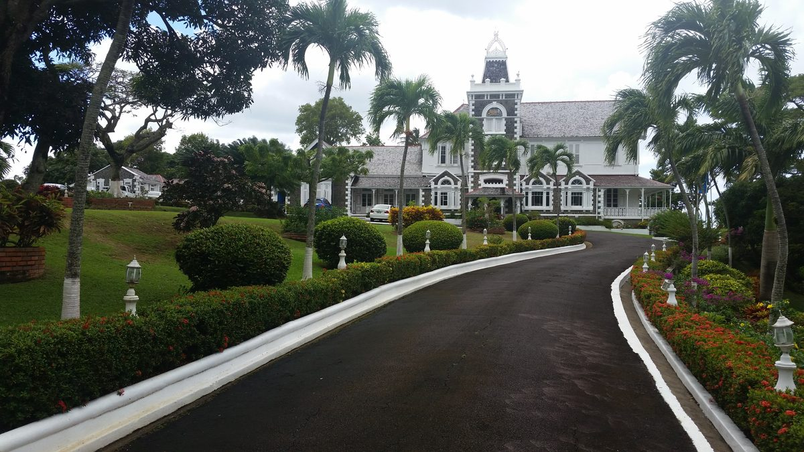
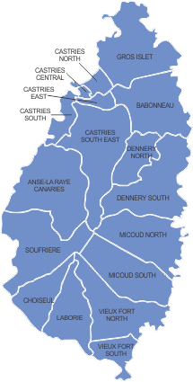

Ulusal Semboller
 Saint Lucia Bayrağı
Saint Lucia Bayrağı
Gök mavisi zemin üzerinde siyah ok başı üçgeninin önünde altın sarısı bir üçgen yer alır; her ikisi de beyaz bir üçgen üzerine yerleştirilmiştir. Mavi renk gökyüzünü ve denizi, altın rengi güneş ışığını, siyah ve beyaz ise halkın ikili mirasını simgeler.
 Saint Lucia Arması
Saint Lucia Arması
Bambu haçlı bir kalkan, iki yanında Saint Lucia papağanları ile çevrelenmiştir. Sloganı: “Toprak, Halk, Işık”.
Ulusal Bilgiler
Ulusal Marş: “Sons and Daughters of Saint Lucia” (Saint Lucia'nın Oğulları ve Kızları) — bağımsızlıkta kabul edildi, 22 Şubat 1979
Ulusal Slogan: “Toprak, Halk, Işık”
Ulusal Gün: 22 Şubat (Bağımsızlık Günü, 1979)
Yönetim Biçimi: Anayasal monarşi altında parlamenter demokrasi (İngiliz Milletler Topluluğu ülkesi)
Devlet Başkanı

Genel Vali: Sir Cyril Errol Melchiades Charles, GCMG
Sir Neville Cenac'ın istifasının ardından üç yıl Genel Vali Vekili olarak görev yaptıktan sonra, 1 Kasım 2024'te Kral III. Charles tarafından atanmıştır. 13 Mart 2025'te Buckingham Sarayı'nda Büyük Haç Şovalyesi (GCMG) unvanı verilmiştir.
Sir Cyril Charles, Saint Lucia'nın ilk Başbakanı ve Saint Lucia İşçi Partisi'nin kurucusu George F.L. Charles'ın oğludur.
Genel Vali, Saint Lucia'da Hükümdarın (Kral III. Charles) temsilcisi olarak görev yapar. Görev büyük ölçüde törensel olup, temel anayasal işlevleri şunlardır:
- • Başbakanı atamak (çoğunluk partisinin/koalisyonun lideri)
- • Parlamentoyu açmak ve feshetmek
- • 2 bağımsız Senatör atamak
- • Yasalara kraliyet onayı vermek
- • Muhalefet Liderini atamak
Hükümet Başkanı

Başbakan: Hon. Philip J. Pierre
Parti: Saint Lucia İşçi Partisi (SLP)
Seçim Bölgesi: Castries East (2025'te %77,8 ile kazandı)
İlk seçildiği tarih: Temmuz 2021
Yeniden seçildi: 1 Aralık 2025 — 2001'den bu yana yeniden seçilen ilk Başbakan, 24 yıllık tek dönem hükümet geleneğini kırarak
Portföyleri: Maliye, Ekonomik Kalkınma; Adalet ve Ulusal Güvenlik; Seçim Bölgesi Kalkınma ve Halkın Güçlendirilmesi
Başbakan Yardımcısı: Dr. Ernest Hilaire
Seçim Bölgesi: Castries South (2025'te %67,7 ile kazandı) | Portföyler: Turizm, Ticaret, Yatırım, Yaratıcı Endüstriler, Kültür ve Miras
Bakanlar Kurulu
Kabine, 1 Aralık 2025 genel seçimlerinin ardından yemin ederek göreve başlamıştır. Başbakan dahil 16 bakandan oluşmakta olup, seçilmiş milletvekillerinden ve bir atanmış senatörden oluşmaktadır.
| # | Bakan | Portföy | Seçim Bölgesi | Parti |
|---|---|---|---|---|
| 1 | Hon. Philip J. Pierre | Başbakan; Maliye, Ekonomik Kalkınma; Adalet ve Ulusal Güvenlik | Castries East | SLP |
| 2 | Dr. Ernest Hilaire | Başbakan Yardımcısı; Turizm, Ticaret, Yatırım, Yaratıcı Endüstriler, Kültür ve Miras | Castries South | SLP |
| 3 | Hon. Stephenson King | Kamu Hizmeti, Ulaşım, Bilgi ve Altyapı Düzenlemeleri | Castries North | IND |
| 4 | Hon. Shawn Edward | Altyapı, Liman Hizmetleri ve Enerji | Dennery North | SLP |
| 5 | Hon. Moses Jn Baptiste | Sağlık, Esenlik ve Beslenme | Vieux-Fort North | SLP |
| 6 | Hon. Alva Baptiste | Dış İlişkiler, Uluslararası Ticaret, Sivil Havacılık ve Diaspora İşleri | Laborie/Augier | SLP |
| 7 | Hon. Kenson Casimir | Eğitim, Gençlik Gelişimi, Spor ve Dijital Dönüşüm | Gros Islet | SLP |
| 8 | Hon. Richard Frederick | Konut, Yerel Yönetim ve Kentsel Yenilenme | Castries Central | IND |
| 9 | Hon. Wayne Girard | Ekonomik Kalkınma ve Gençlik Ekonomisi | Anse-La-Raye/Canaries | SLP |
| 10 | Hon. Emma Hippolyte | Eşitlik, Çalışma, Toplumsal Cinsiyet İşleri, Sosyal Adalet ve Tüketici Refahı | Soufriere/Fond St Jacques | SLP |
| 11 | Hon. Jeremiah Norbert | İçişleri, Suç Önleme, Çatışma Çözümü ve Engelli Bireyler | Micoud North | SLP |
| 12 | Hon. Danny Butcher | Eğitim (Erken Çocukluk, Sürekli ve Özel Eğitim, Dijital Dönüşüm) | Vieux-Fort South | SLP |
| 13 | Hon. Keithson Charles | Fiziksel Kalkınma ve Kamu Hizmetleri | Choiseul/Saltibus | SLP |
| 14 | Hon. John Paul Estephane | Turizm, Ticaret, Yatırım, Yaratıcı Endüstriler, Kültür ve Miras Bakanlığı Bakanı | Babonneau | SLP |
| 15 | Hon. Lisa Jawahir | Tarım, Balıkçılık, Gıda Güvenliği ve İklim Değişikliği | Castries South East | SLP |
| 16 | Sen. Dr. Shanda Harracksingh | Başbakanlık Ofisi Bakanı | Senatör (atanmış) | SLP |
Bağımsızlar Hakkında Not
Stephenson King (eski Başbakan, 2007–2011) ve Richard Frederick, Başbakan Pierre'in kabinesinde görev yapan bağımsız milletvekilleridir; bu durum hükümete 17 sandalyeden 16'sıyla fiili parlamento çoğunluğu sağlamaktadır.
Saint Lucia Parlamentosu

Saint Lucia, Temsilciler Meclisi ve Senato'dan oluşan çift meclisli bir parlamentoya sahiptir.
Temsilciler Meclisi (Alt Meclis)
17 seçilmiş üye (tek üyeli seçim bölgeleri, basit çoğunluk sistemi)
Meclis Başkanı: Hon. Claudius James Francis (16 Aralık 2025'te yeniden atandı; 2021'den beri Meclis Başkanı)
Mevcut dağılım:
- • SLP: 14 sandalye
- • Bağımsız (hükümet yanlısı): 2 sandalye
- • UWP (muhalefet): 1 sandalye
Senato (Üst Meclis)
11 atanmış üye (seçilmez)
- • 6'sı Başbakan tarafından atanır
- • 3'ü Muhalefet Lideri'nin tavsiyesiyle atanır
- • 2'si Genel Vali tarafından atanır (bağımsız)
Senato Başkanı: Hon. Alvina Reynolds (16 Aralık 2025'te yeniden atandı)
Senato Dağılımı (15 Aralık 2025'te Atanmıştır)
| Senatör | Atayan Makam | Notlar |
|---|---|---|
| Hon. Alvina Reynolds | Başbakan | Senato Başkanı |
| Dr. Shanda Lee Harracksingh | Başbakan | Kabine Bakanı |
| Ignatius Jean | Başbakan | — |
| Dr. Virginia Poyotte | Başbakan | — |
| Dr. Allison A. Jean | Başbakan | — |
| Mtonya Deterville | Başbakan | — |
| Tommy Descartes | Muhalefet Lideri | — |
| Elisha Norbert | Muhalefet Lideri | — |
| Angelina Phera Polius | Muhalefet Lideri | — |
| Embert Charles | Genel Vali | Bağımsız |
| Deale A. L. Lee | Genel Vali | Bağımsız |
Muhalefet
Muhalefet Lideri: Allen Chastanet (UWP)
Seçim Bölgesi: Micoud South (2025'te %58,6 ile kazandı) | Eski Başbakan: 2016–2021
Chastanet, Aralık 2025'teki tarihi yenilginin ardından Temsilciler Meclisi'ndeki tek UWP üyesidir. Aralık 2025 başında UWP Siyasi Liderliğinden istifasını sunmuş ancak UWP Ulusal Konseyi istifasını oybirliğiyle reddetmiştir; bir sonraki kongreye kadar parti lideri olarak görevine devam etmektedir.
Siyasi Partiler
| Parti | Kuruluş | İdeoloji | Lider | 2025 Sandalye |
|---|---|---|---|---|
| Saint Lucia İşçi Partisi (SLP) | 1949 | Merkez-sol, sosyal demokrasi | Philip J. Pierre | 14 |
| Birleşik İşçiler Partisi (UWP) | 1964 | Merkez-sağ, liberal muhafazakarlık | Allen Chastanet | 1 |
| Lucian Halk Hareketi (LPM) | ~2010'lar | Popülist | Therold Prudent | 0 |
| Ulusal Muhafazakar Parti (NCP) | Yeni | Muhafazakar | — | 0 |
İki Parti Hakimiyeti
Saint Lucia siyaseti, 1979'daki bağımsızlıktan bu yana SLP ve UWP tarafından domine edilmektedir. İki parti dönüşümlü olarak iktidara gelmiş olup, SLP'nin 2025'teki yeniden seçimi, 2001'den bu yana bir iktidardaki partinin art arda iki dönem kazandığı ilk seçimdir.
2025 Genel Seçim Sonuçları
1 Aralık 2025 tarihinde yapılan genel seçimde SLP art arda ikinci dönemini kazandı — 24 yıllık tek dönem hükümet geleneğini kıran tarihi bir başarı.
Genel Sonuçlar
| Parti | Sandalye | Oy | Oy Payı | Değişim |
|---|---|---|---|---|
| SLP | 14 | 57.169 | %56,0 | +1 sandalye |
| UWP | 1 | 38.737 | %38,0 | −1 sandalye |
| Bağımsız | 2 | 6.075 | %6,0 | 0 |
| NCP | 0 | 42 | %0,04 | — |
| Toplam | 17 | 102.023 | %100 | — |
Seçim Bölgesi Sonuçları
| Seçim Bölgesi | Kazanan | Parti | Oy | % |
|---|---|---|---|---|
| Gros Islet | Kenson Casimir | SLP | 8.175 | %67,9 |
| Babonneau | John Paul Estephane | SLP | 3.918 | %58,8 |
| Castries North | Stephenson King | IND | 3.485 | %66,0 |
| Castries East | Philip J. Pierre | SLP | 4.014 | %77,8 |
| Castries Central | Richard Frederick | IND | 2.151 | %59,5 |
| Castries South | Dr. Ernest Hilaire | SLP | 3.228 | %67,7 |
| Anse-La-Raye/Canaries | Wayne Girard | SLP | 2.746 | %56,0 |
| Soufriere/Fond St Jacques | Emma Hippolyte | SLP | 2.622 | %51,8 |
| Choiseul/Saltibus | Keithson Charles | SLP | 2.941 | %53,9 |
| Laborie/Augier | Alva Baptiste | SLP | 2.612 | %81,2 |
| Vieux-Fort South | Danny Butcher | SLP | 3.564 | %75,2 |
| Vieux-Fort North | Moses Jn Baptiste | SLP | 2.444 | %72,4 |
| Micoud South | Allen Chastanet | UWP | 2.292 | %58,6 |
| Micoud North | Jeremiah Norbert | SLP | 2.321 | %57,4 |
| Dennery South | Paul Prospere | SLP | 1.566 | %50,9 |
| Dennery North | Shawn Edward | SLP | 2.786 | %58,0 |
| Castries South East | Lisa Jawahir | SLP | 4.299 | %57,4 |
Yargı

Saint Lucia'nın hukuk sistemi İngiliz ortak hukukuna (common law) dayanmaktadır. Yargı, yürütme ve yasama organlarından bağımsız olarak çalışmaktadır.
Mahkeme Sistemi
- • Sulh Mahkemeleri — küçük davalar için ilk derece
- • Yüksek Mahkeme — ağır ceza ve hukuk davaları
- • Doğu Karayip İstinaf Mahkemesi — temyiz yargı yetkisi
- • Karayip Adalet Divanı (CCJ) — nihai temyiz mahkemesi (Temmuz 2023'ten itibaren)
CCJ Katılımı (Temmuz 2023)
Saint Lucia, Temmuz 2023'te Karayip Adalet Divanı'nın temyiz yargı yetkisine katılmış; Londra'daki Danışma Kurulu Yargı Komitesi'nin (Privy Council) yerini almıştır. CCJ ayrıca CARICOM antlaşma konuları için asıl yargı yetkisi mahkemesi olarak da görev yapmaktadır.
Doğu Karayip Yüksek Mahkemesi (ECSC)
Saint Lucia, altı bağımsız OECS devletine ve üç İngiliz toprak birliğine hizmet veren ECSC'nin üyesidir. ECSC, Adalet Yüksek Mahkemesi ve İstinaf Mahkemesi'nden oluşmakta olup merkezi Saint Lucia, Castries'dedir.
Temel Politika Girişimleri
Saint Lucia'nın ekonomik ve sosyal kalkınmasını şekillendiren başlıca hükümet politikaları ve yasal düzenlemeler:
Ulusal Varlık Fonu (Şubat 2025)
Kabine tarafından 3 Şubat 2025 tarihinde onaylanmış olup, CBI/CIP gelirleriyle finanse edilmektedir. Hedefleri arasında sürdürülebilir ekonomik kalkınma, nesiller arası servet koruma ve iklim direnci yer almaktadır. Mevzuat parlamento onayına sunulmak üzere hazırlanmıştır.
Bütçe 2025/26 — Rekor EC$2,06 Milyar
Saint Lucia tarihinin en büyük bütçesi. Sermaye harcaması EC$325,6 milyon olarak belirlendi (Altyapı Departmanı'na %27 ayrıldı). Gelir EC$1,71 milyar olarak öngörüldü (EC$1,45 milyar vergi, EC$171,9 milyon vergi dışı).
| Önlem | Ayrıntılar |
|---|---|
| Kişisel vergi muafiyeti | EC$40.000'e yükseltildi |
| Emekli maaşı geliri | Ocak 2025'ten itibaren vergiden muaf |
| NIC emekli maaşları | Temmuz 2025'ten itibaren TÜFE bağlantılı |
| Gıda ürünlerinde KDV | Temmuz 2026'dan itibaren kaldırılması |
| Siber güvenlik & yapay zeka | Yeni vergi teşvikleri getirildi |
| Vergi affı | Mayıs 2026'ya uzatıldı |
Kamu Sektörü Ücretleri
2022–2025 dönemi için %6 artış, ardından 2025–2028 dönemi için %7 artış; 11.000'den fazla kamu çalışanını kapsamaktadır.
İklim Değişikliği Yasası 2024
Ulusal İklim Değişikliği Komitesi'ni (NCCC) resmileştiren ve iklim yönetişimini yasalara gömen dönüm noktası niteliğinde mevzuat. Doğu Karayipler'deki ilk bu tür yasalardan biri.
İklim Finansmanı Birimi (Eylül 2025)
Küresel Yeşil Büyüme Enstitüsü (GGGI) ile ortaklık içinde başlatıldı; NDC Ortaklık Eylem Fonu tarafından finanse edilmektedir. Saint Lucia için iklim finansmanı mobilizasyonunu koordine eder.
Evrensel Sağlık Sigortası
Evrensel sağlık sigortası yol haritası Nisan 2025'te Parlamentoya sunuldu. Sağlık bütçesi XCD 206 milyon'u aşmaktadır (tarihinin en yükseği); üç kademeli fayda yapısı önerilmektedir.
İklim Değişikliği Etkisi & Dayanıklılık
İklim değişikliği, Saint Lucia’nın ekonomisi, altyapısı ve doğal kaynakları için varoluşsal bir tehdit oluşturmaktadır. Hükümet, NDC 3.0 ve İklim Değişikliği Yasası 2024 ile desteklenen Karayipler’in en iddialı iklim politikası çerçevesiyle yanıt vermiştir.
NDC 3.0 — Ulusal Olarak Belirlenmiş Katkı (Şubat 2025)
Saint Lucia, Şubat 2025’te Karayipler’deki ilk NDC 3.0’ı sundu — bölgenin en iddialı iklim planı.
| Yenilenebilir enerji hedefi (2030) | Elektrik üretiminin %40’ı |
| Yenilenebilir enerji hedefi (2035) | Elektrik üretiminin %46’sı |
| Ulaşım sektörü | Emisyon azaltma hedefleri ilk kez dahil edildi |
| Adaptasyon öncelikleri | Su güvenliği, kıyı dayanıklılığı, tarım, balıkçılık |
| Mevcut dizel bağımlılığı | Elektriğin ~%95’i dizel ile üretilmektedir (LUCELEC) |
Saint Lucia İçin İklim Projeksiyonları
| Risk Faktörü | Projeksiyon | İş Etkisi |
|---|---|---|
| Sıcaklık | 2050’ye kadar +1,0–1,5°C | Artan soğutma maliyetleri, tarımda sıcak stresi |
| Yağış | −%15 ile −%48 (senaryoya bağlı) | Su stresi tarımı, turizmi ve konut geliştirmeyi etkiler |
| Deniz seviyesi yükselmesi | 2100’e kadar 0,3–0,6 metre | Kıyı mülklerinde sel/erozyon riski; altyapı maruziyeti |
| Kasırga yoğunluğu | Daha az ama daha güçlü fırtınalar bekleniyor | İklime maruz varlıklar için artan sigorta maliyetleri |
| Mercan ağarması | Okyanus ısınmasıyla hızlanıyor | Dalış turizmi ve balıkçılık verimliliğini etkiler |
İklim Adaptasyon Projeleri
| Proje | Finansman | Kapsam |
|---|---|---|
| FISH-ADAPT (GEF/FAO/GCF) | 16,7 milyon ABD$ | Karayipler balıkçılık iklim adaptasyonu — balık stoku değişimleri ve mercan tahribatını ele alır. Saint Lucia doğrudan faydalanıcıdır. |
| Dünya Bankası Sel Dayanıklılığı | 25 milyon ABD$ | Sel riski yönetimi: sele maruz alanlarda altyapı iyileştirmeleri, erken uyarı sistemleri. |
| CCRIF SPC (Parametrik Sigorta) | Hükümet primleri | Karayipler Afet Riski Sigorta Tesisi — nitelikli kasırga, deprem veya aşırı yağış olaylarından sonra 14 gün içinde hızlı ödemeler. |
| Jeotermal Sondaj (RESDP) | 35,8 milyon ABD$ (CIF/Dünya Bankası) | Sulphur Springs’te keşif amaçlı jeotermal sondaj — baz yük yenilenebilir enerji üretimi sağlayabilir. |
İklim & İş Fırsatları
Dönüşüm şu alanlarda önemli yatırım fırsatları yaratmaktadır: yenilenebilir enerji kurulumu ve bakımı, su tasarrufu teknolojisi, iklime dayanıklı tarım (hidroponik, damla sulama), kıyı koruma mühendisliği, yeşil inşaat ve EV şarj altyapısı. Caribbean Greenpreneurs programı, yeşil girişimler için 50.000 ABD$’a kadar faizsiz kredi sunmaktadır. Bkz. Startup’lar & Sektörler ve Temel Sektörler.
Temel Düzenleyici Kurumlar
Bu kurumlar Saint Lucia'da iş faaliyetleri ve yatırım için kritik öneme sahiptir:
| Kurum | Görev | Temel İşlevler |
|---|---|---|
| Mali Hizmetler Düzenleme Kurumu (FSRA) | Finans sektörü denetimi | Sigorta, para hizmetleri, uluslararası bankalar, yatırım fonları ve kredi birliklerini lisanslar ve düzenler |
| Doğu Karayip Merkez Bankası (ECCB) | Para otoritesi | EC Dolarını yönetir, ticari bankaları denetler, 48 yıllık USD sabitlemesini sürdürür (XCD 2,70 = USD 1) |
| Ulusal Altyapı Düzenleme Komisyonu (NURC) | Altyapı düzenlemesi (kur. 2016) | Elektrik, su ve kanalizasyon hizmetlerini düzenler; tarife değişikliklerini onaylar |
| Ulusal Telekomünikasyon Düzenleme Komisyonu (NTRC) | Telekom düzenleyicisi | Telekom operatörlerini lisanslar, spektrumu yönetir, rekabeti uygular |
| Veri Koruma Komiseri | Gizlilik ve veri koruma | 2011 Veri Koruma Yasası'nı uygular; veri sorumlularını kaydeder |
| Saint Lucia Standartlar Bürosu (SLBS) | Standartlar ve kalite | Ürün testi, sertifikasyon ve ulusal standart geliştirme |
| Invest Saint Lucia | Yatırım tanıtımı | Doğrudan yabancı yatırımı çeker, yatırımcıları destekler, serbest bölgeleri ve endüstri alanlarını yönetir |
| Mali İstihbarat Otoritesi (FIA) | AML/CFT izlemesi | Şüpheli işlemleri izler ve kara para aklama ile mücadele mevzuatını uygular |
| Gençlik Ekonomisi Ajansı (YEA) | Genç girişimcilik (kur. 2022) | Gençlik Ekonomisi Yasası kapsamında 18–35 yaş arası genç girişimcilere hibe, kredi ve eğitim sağlar |